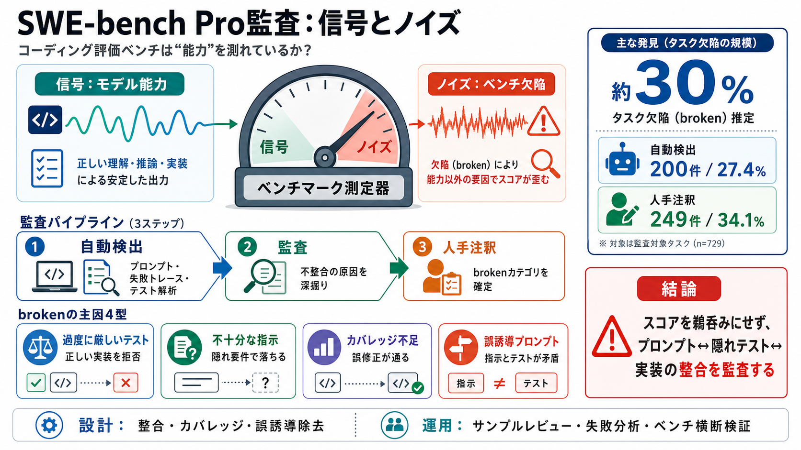

SWE-bench Pro Explained: The New Standard for AI Coding ...
# SWE-bench Pro Explained: The New Standard for AI Coding Benchmarks (2026). If you've been following AI coding models, …

# SWE-bench Pro Explained: The New Standard for AI Coding Benchmarks (2026). If you've been following AI coding models, …
| - [x] | 🆕 Gemini 3 Flash (high reasoning) | 75.80 | $0.36 | [](https://docent.transluce.org/dashboard/1ebbdd7a-55b3-40…
Beyond SWE-Bench Pro - Where do Agents go from Here? MLOps.community 40300 subscribers 40 likes 1829 views 3 Apr 2026 Ya…
![Image 3](https://cdn.sanity.io/images/ojuglg5y/production/0fade2cc4a14416bcc71f767783823c9aad7e394-1456x816.png?w=1456…
## SWE-Bench Pro: Can AI Agents Solve Long-Horizon Software Engineering Tasks? **TL;DR:** We present SWE-Bench Pro, a be…